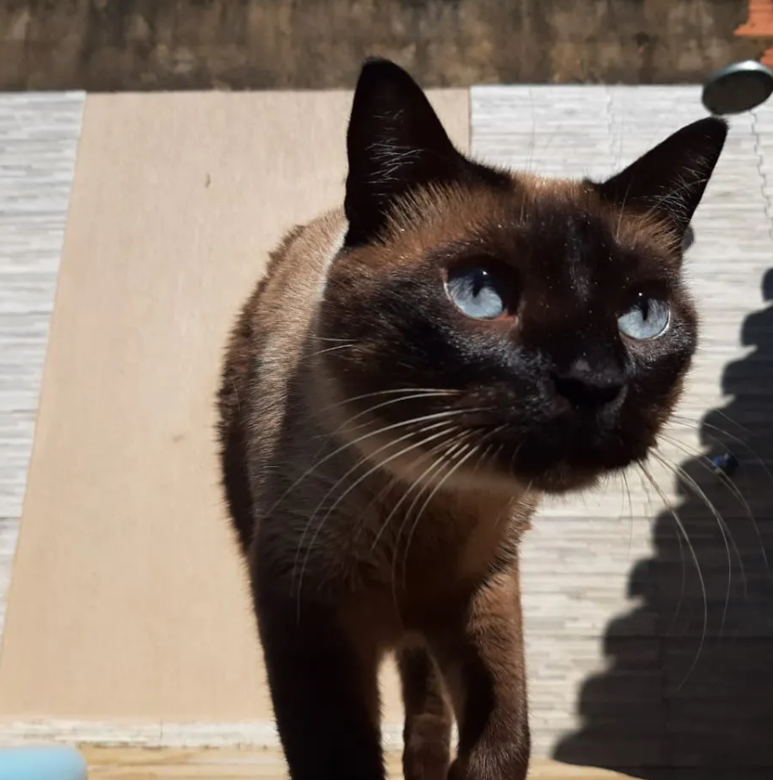
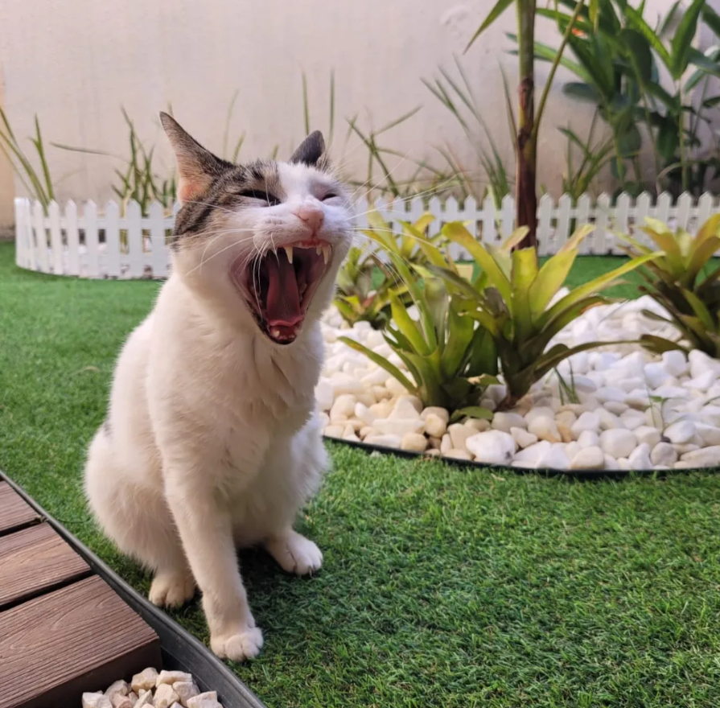

O Lennon é um gato SRD, porém há suspeita de que seja um
Thai. Ele foi adotado pela família Jatobá, de Palmeira dos índios, em 2015.
Alguns anos depois, em 2021, ganhou uma irmãzinha chamada Jade

A Jade é uma gata que foi adotada durante a pandemia de
Pandemia_de_COVID-19 devido a situação em que se encontrava.
Ela era uma gatinha de rua que estava com 3 hérnias e entrando no cio